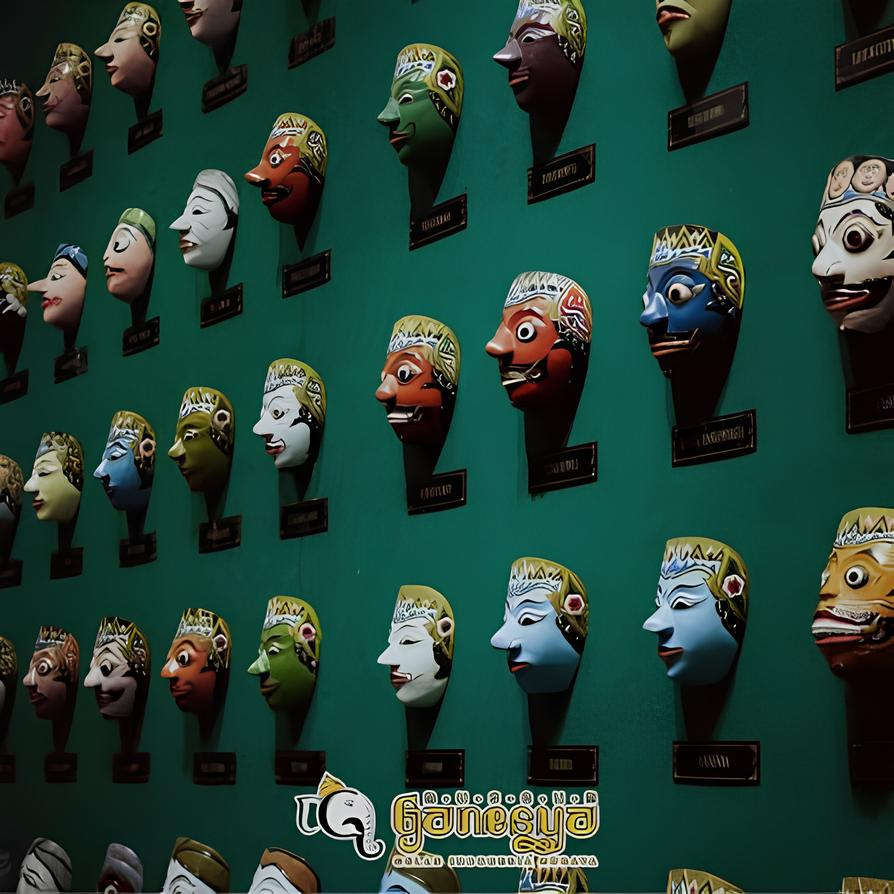
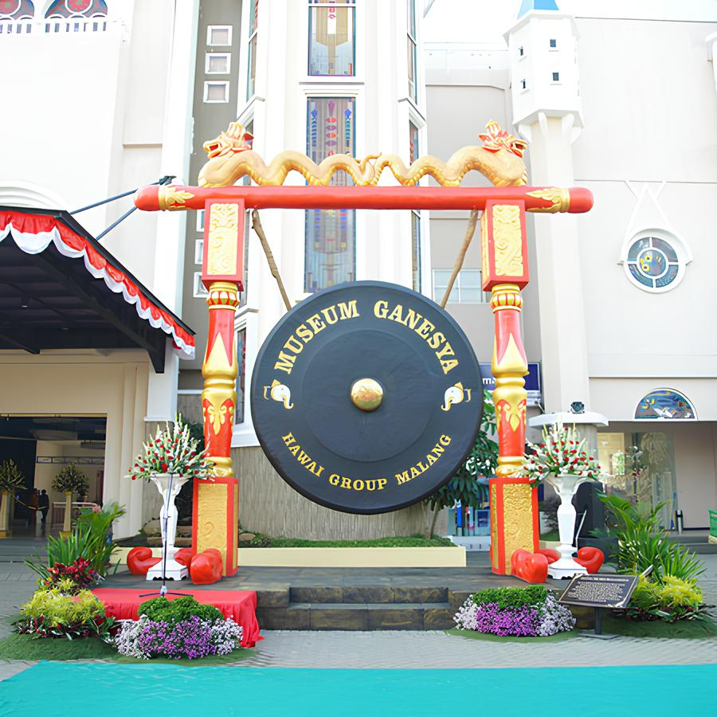

Jelajahi jejak sejarah, kekayaan budaya, dan warisan Nusantara melalui koleksi Museum Ganesya.
Lihat Koleksi →
Museum Ganesya atau Museum Budaya Indonesia merupakan museum yang menyimpan berbagai koleksi yang berkaitan dengan sejarah dan budaya Nusantara.
Museum ini diresmikan pada 12 Juli 2019 dan menjadi salah satu tempat edukasi bagi masyarakat untuk mengenal kekayaan budaya Indonesia.
Melestarikan dan memperkenalkan kekayaan budaya Indonesia kepada masyarakat melalui koleksi museum.